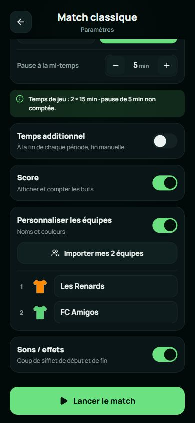
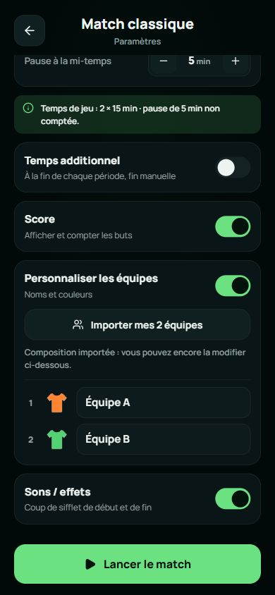
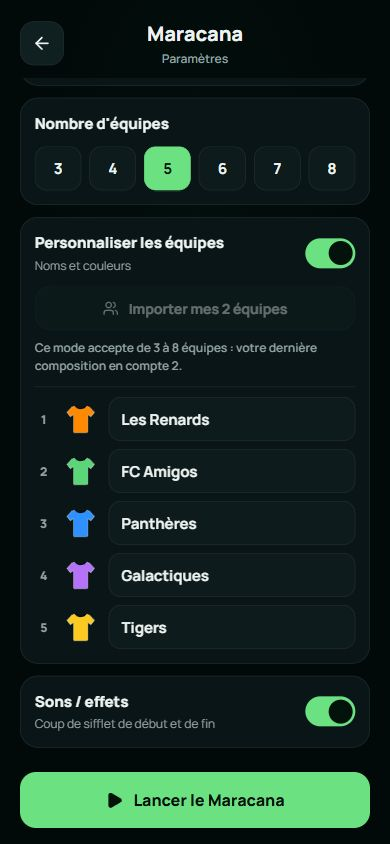
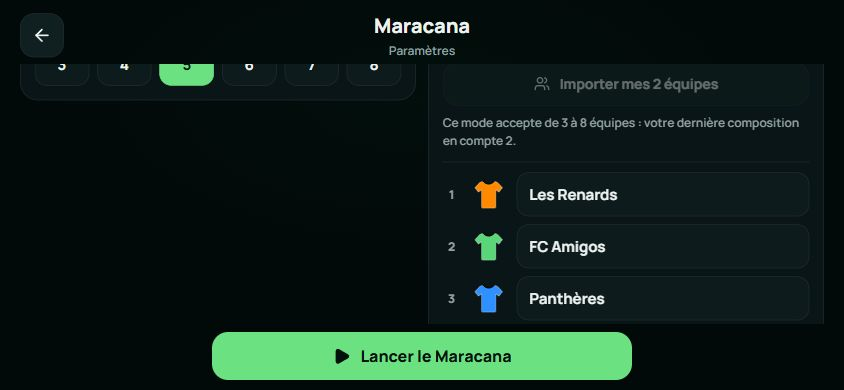

Roundr · Importer mes équipes
Lovable figé 1c59720 / Expo Phase 2A 3135323. Deux compositions créées et enregistrées par les interfaces réelles : 10 joueurs, 2 équipes nommées Équipe A et Équipe B. Aucun accès direct au stockage pour fabriquer les états.
Import autorisé en classique ; Maracana refuse deux équipes avec une explication. Les boutons font 44 px de haut, aux mêmes coordonnées et dimensions. Modifier une équipe importée puis réimporter restitue la composition enregistrée, sans mutation de l’original.
Écarts mineurs constatés : espacement icône/texte 8 px sur Lovable et 10 px sur Expo ; les couleurs importées Expo restent celles de l’ancien créateur (#ff8331/#53d273), au lieu des couleurs initiales Lovable (#ff8900/#5ad578). Préserver ces couleurs enregistrées est attendu ; la palette des nouvelles compositions sera alignée en Phase 2B. Aucun défaut fonctionnel significatif d’import confirmé, aucune modification de la PR #7.
Avant import : composition de deux équipes disponible · 390 × 844
Expo · commit 3135323

Après import : noms et couleurs enregistrés · 390 × 844
Expo · commit 3135323

Après import : paysage · 844 × 390
Maracana : composition de deux équipes incompatible · 390 × 844
Expo · commit 3135323

Maracana : refus expliqué en paysage · 844 × 390
Expo · commit 3135323

Limite : accessibilité vérifiée dans le navigateur (nom, état désactivé, cibles et champs) ; VoiceOver/TalkBack sur appareil restent à tester. Mesures dans mesures.json.